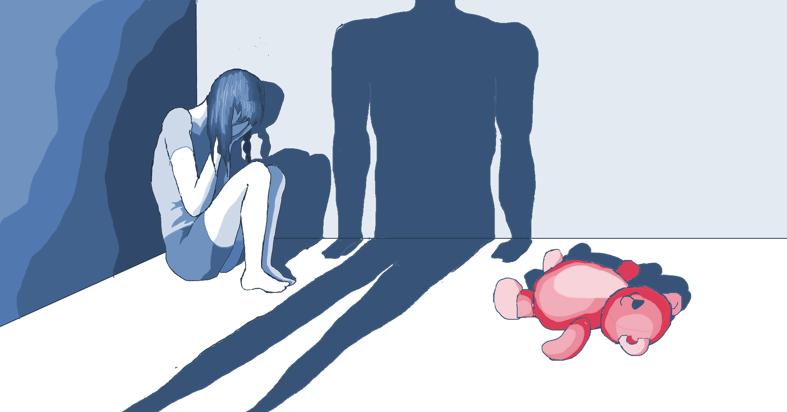
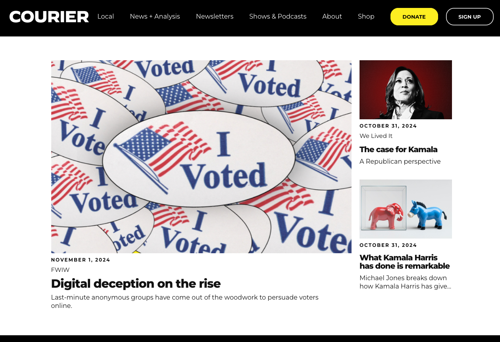
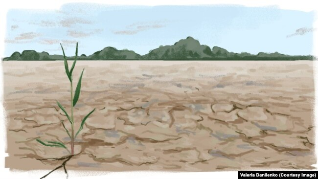
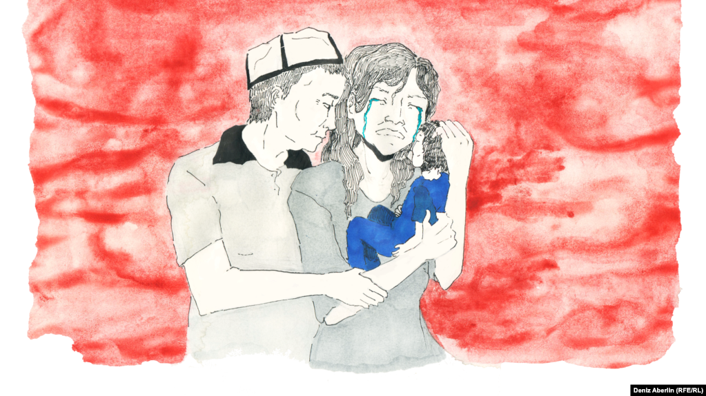
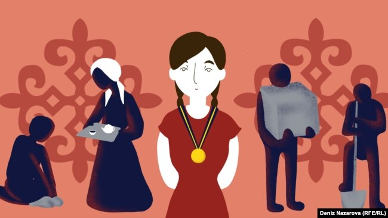
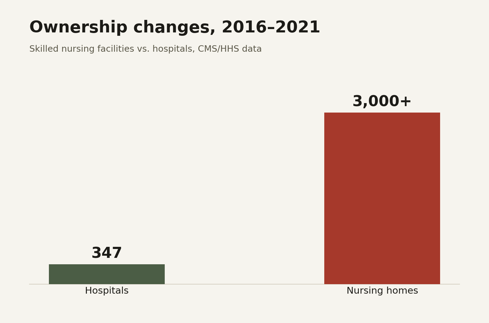

Suiumkan Ulanbek
Data & Investigative Journalist — New York, NY
I am a data and investigative journalist. I use data analysis, traditional reporting, and visualization to tell compelling stories.
I've reported for local and international media including Hunterbrook Media, Radio Free Europe, Columbia Journalism Review, and openDemocracy. I hold a master's degree in data journalism from Columbia Journalism School.
I focus on reporting that examines complex systems, including healthcare, criminal justice, and the global economy. In addition, I love science and creating maps.


Published Works

Official data shows that fewer and fewer child abusers in Kyrgyzstan are being sent to jail, and most escape punishment altogether.

The progressive "newsroom" network spent more than $6 million on Meta ads in October 2024, trailing only the official Trump and Harris campaigns.

Kyrgyzstan's farmers are overusing chemical fertilizers, degrading roughly a third of the country's agricultural land and costing an estimated $601 million a year, or 16% of GDP.

How women in Kyrgyzstan experience domestic violence, and why it's so difficult to secure real punishment for abusers — most cases fall under administrative liability, where the offender can get off with a fine or community service, and impunity lets the abuse continue.

New HIV infections among women in Kyrgyzstan have risen 72% over the past decade, driven largely by unprotected sex with partners who conceal their status.

In some regions of Kyrgyzstan, up to 75% of eighth-graders test below basic proficiency, and girls in poor rural households take on far more unpaid domestic work than boys, cutting into study time.

Kyrgyzstan's microcredit sector was created to fight poverty, but with interest rates up to 40% and repayments eating a quarter of average income, borrowers often trade today's poverty for tomorrow's.

Kyrgyzstan's electricity tariffs don't cover production costs, leaving the national energy sector more than 100 billion som in debt and its aging grid at risk of failure.
Kyrgyzstan's Silk Road Mountain Race, held since 2018, is considered one of the toughest bikepacking races in the world — 1,700 kilometers and 31,000 meters of elevation gain.
Harlem parents pushed back against a Department of Education proposal to convert PS 76 into a middle and high school, arguing the plan overlooked their community's concerns.
Course Projects
Columbia Journalism School
Columbia Journalism School master's project on maternal mortality in the United States, with a focus on mental health–related deaths.

Scrollytelling investigation into private-equity and for-profit consolidation in the nursing home industry, and its effect on quality of care.
Course project focused on building a predictive model to forecast the men's singles champion of the 2024 French Open.
Course project on maternal mortality in the U.S.
Patient profile writing for Investigating Healthcare class.
Course project for Investigating Healthcare class on the use of restraint weapons in hospitals.